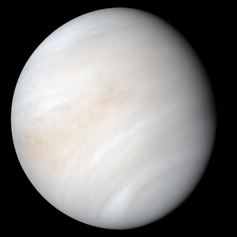

太陽系是一個受太陽重力約束在一起的恆星系統，包括太陽以及直接或間接圍繞太陽運動的天體。 在直接圍繞太陽運動的天體中，最大的八顆被稱為行星，其餘的天體要比行星小很多， 比如矮行星、太陽系小天體的小行星和彗星，軌道間接圍繞太陽運動的天體是衛星， 其中有兩顆比最小的行星水星還要大。
太陽系的形成大約始於46億年前一個巨型星際分子雲的重力塌縮。 太陽系內絕大部分的質量都集中於太陽 ，餘下的天體中，質量最大的是木星。
位於太陽系內側的是四顆較小的行星，分別是水星、金星、地球和火星，它們被稱為類地行星， 主要由岩石和金屬構成。 外側的四顆行星被稱為巨行星，其質量比類地行星要大得多。其中最大的兩顆是木星和土星， 它們都是氣態巨行星，主要成分是氫和氦。 最外側的兩顆行星是天王星和海王星，它們是冰巨星， 主要由一些熔點比氫和氦更高的揮發成分組成，比如水、氨和甲烷。 幾乎所有的行星都在靠近黃道平面的軌道上運行。

太陽系也包含許多較小的天體位於火星和木星軌道之間的主小行星帶， 其中的大部分天體都是像類地行星那樣由岩石和金屬組成。在海王星軌道之外是古柏帶和離散盤， 包含了有大量的海王星外天體，主要由冰組成，再往外還有新發現的類塞德娜天體（sednoid）。 在這些天體中，有幾十甚至上萬顆足夠大的天體，能靠自身的重力形成球體， 這些天體被稱為為矮行星。 已經被確認是矮行星的包括小行星帶的穀神星，和海王星外天體的冥王星和鬩神星。
所謂的「內太陽系」(The inner solar system) 包括了太陽、水星、金星、地球及火星，
而「外太陽系」(The outer solar system) 則有木星、土星、天王星、海王星及冥王星。
軌道環繞太陽的天體被分為三類：行星、矮行星、和太陽系小天體
行星是環繞太陽且質量夠大的天體。這類天體：
- 有足夠的質量使本身的形狀成為球體
- 有能力清空鄰近軌道的小天體
能成為行星的天體有8個：水星、金星、地球、火星、木星、土星、天王星和海王星。
矮行星（英語：Dwarf planet），又稱中行星、準行星、侏儒行星，是具有行星級質量，但既不是行星， 也不是衛星的天體。
- 它是直接環繞著恆星，並且自身的重力足以達成流體靜力平衡的形狀（通常是球體）
- 但未能清除鄰近軌道上的其它小天體和物質
冥王星，最著名的矮行星
太陽系小天體（small Solar System Body, SSSB）是國際天文聯會在2006年重新解釋太陽系內的行星 和矮行星時，產生的新天體分類項目。
是指除了矮行星之外的所有小行星：
- 傳統的小行星（除了最大的穀神星）
- 半人馬小行星和特洛伊天體
- 海王星外天體（除了冥王星、鬩神星、鳥神星和妊神星）
- 所有的彗星
著名的哈伯彗星
內太陽系是包括類地行星和小行星帶的區域。主要成分是矽酸鹽和金屬，相對而言是太陽系內較靠近太陽的 區域，
而整個區域的半徑小於木星軌道和土星軌道之間的距離。 這個區域也在凍結線，距離太陽略小於5AU（大約7億公里）的範圍內。
金星（距太陽0.7 天文單位）的體積與地球相似（0.815地球質量），沒有天然的衛星。 它和地球一樣有厚厚的矽酸鹽地函包圍著鐵的核心，還有內部地質活動的證據。它有濃厚的大氣層， 但是非常乾燥，而且密度比地球高90倍，其主要成份是二氧化碳，還有極少量的氮。 它是顆炙熱的行星，表面的溫度超過400℃（752℉），很可能是大氣層中有大量的溫室氣體造成的。 目前沒有表面有地質活動的確切證據，但是金星沒有磁場可以阻止實質大氣層的流失， 這暗示它有火山活動來補充。
火星（距太陽1.5天文單位）比地球和金星小，其質量為地球的10.7%。火星大氣主要由二氧化碳構成， 火星表面的氣壓為6.1毫巴（大約是地球大氣壓的0.6%）。其表面有大量火山和裂谷， 比如奧林匹斯山和水手峽谷，火星在過去200萬年間都有火山活動， 這表明火星的地質活動至少可以追溯到2百萬年前。火星表面呈紅色是因為其土壤中含有氧化鐵（鐵鏽）。 火星有兩顆較小的天然衛星（傅博斯和戴摩斯），它們被認為是火星捕獲到的小行星。
除了最大的穀神星之外，所有的小行星都屬於太陽系小天體，並且主要成分都是耐熔質的岩石和金屬的礦物， 與些許的冰。它們的大小從幾米到幾百公里都有。小於一米的小行星通常稱為流星體或微流星體 （榖粒的尺寸），只是依據大小的不同，是有點過於武斷的定義。
小行星帶分布在火星軌道和木星軌道間，距離太陽2.3AU至3.3AU的範圍內。 它被認為是受到木星的重力干擾而不能凝聚成型的失敗行星，是太陽系形成時遺留下的物質。 小行星帶包含成千上萬，甚至數百萬顆直徑過一公里的小天體。 儘管這樣，估計小行星帶的總質量不會超過地球的千分之一。小行星帶是非常空曠的， 太空船經常飛越這個區域，都未曾發生任何事件。
外太陽系區域是巨行星和它們的大衛星的家，半人馬小行星和許多短週期彗星的軌道也在這一區。 由於它們離太陽更遠，外太陽系包含的固體物質比內太陽系含有更多的揮發性物質， 像是水、氨和甲烷的比例都較高，而因為溫度低，使得這些化合物都成為固態。
木星（距離太陽5.2AU），質量是地球的318倍，是其它行星質量總和的2.5倍，其組成絕大部分是氫和氦。 木星內部豐沛的熱能在大氣層中創造出半永久性的特徵，例如雲帶和大紅斑。木星已知的衛星有79顆， 4顆最大的，蓋尼美德、卡利斯多、埃歐和歐羅巴，顯示出類似於類地行星的性質，像是火山和內熱。 蓋尼美德是太陽系內最大的衛星，比水星還要大。
土星（距離太陽9.5 AU），最大的特徵是寬闊環系統，有些與木星相似的性質，像是大氣成分和磁氣圈等。 雖然土星的體積是木星的60%，但質量不到木星的三分之一，只是地球的95倍。 土星是太陽系內唯一密度比水低的行星。土星環由小冰塊和岩石顆粒組成；已知土星的衛星有82顆， 為最多衛星的行星。其中兩顆：泰坦和恩克拉多斯顯示有地質活動的跡象。 泰坦是太陽系第二大的衛星，也比水星大，並且是太陽系內唯一有大氣層的衛星。

天王星（距離太陽19.2AU），質量是地球的14倍，是最輕的外行星。 它是顆獨特的行星，側躺在軌道上， 對黃道的轉軸傾角超過九十度。相較於其他的巨行星，它的核心是最冷的，輻射到太空的熱量很少。 天王星已知的衛星有27顆，最大的幾顆衛星是泰坦妮亞、奧伯龍、烏姆柏里厄爾、艾瑞爾、米蘭達。
海王星（距離太陽30.1 AU），雖然體積略小於天王星，但質量卻較大（相當於17倍的地球質量）， 因而有較高的密度。它散發出較多的內熱，但沒有木星和土星的多。已知的海王星衛星有14顆， 最大的崔頓地質異常活躍，有冰火山和液態氮。海衛一是唯一有著逆行軌道的大衛星。 有幾顆小行星在軌道上伴隨著，稱為海王星特洛伊，與海王星有著1:1的軌道共振。
在海王星軌道之外，還存在著海王星外天體、甜甜圈形狀的古柏帶、冥王星和一些其它的矮行星， 和部分和古柏帶重疊，但向盤面傾斜到達更遠處的離散盤天體。整個地區仍是大量未探索的空間。 它似乎是壓到性的全部由數以千計的小天體組成 －－最大的直徑不到地球的五分之一， 且質量遠小於月球，主要由冰和岩石組成。這個地區有時被描述為「太陽系第三區」， 包圍著內太陽系和外太陽系。
古柏帶是由大量碎屑組成，類似於小行星帶，但是組成物體的主要成分是冰。 它延伸在距離太陽30AU至50AU的空間之間，雖然估計其間包含直徑數百米到數千米的矮行星， 但主要還是由太陽系小天體組成。許多大的古柏帶天體，像是創神星、伐羅那和亡神星， 當有近一步的資料後，可能會是矮行星。估計古柏帶有100,000顆直徑大於50公里的小天體， 但古柏帶的總質量只有地球的十分之一或甚至只有百分之一。 許多古柏帶天體都有多顆衛星，和大多數的軌道都在黃道平面之外。

離散盤，在黃道部分與古柏帶重疊，並進一步向外延伸，被認為是短週期彗星的來源。 離散盤的天體被認為是在太陽系形成時，海王星早期向外遷移時受到重力影響，被噴出進入不穩定軌道。 多數離散盤天體（SDOs）的近日點在古柏帶內，但遠日點又遠遠超過（有些距離太陽 遠達150AU）。 離散盤天體的軌道對黃道面有著高度的傾斜，甚至於垂直黃道面。 有些天文學家認為離散盤天體只是古柏帶的另一個區域，因此描述離散盤天體為「離散古柏帶天體」。 也有些天文學家將半人馬小行星歸類為向內離散古柏帶天體， 而一併將離散盤天體歸類為向外離散古柏帶天體。